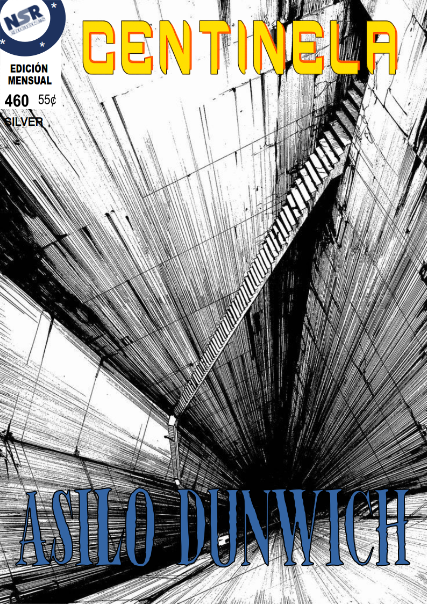

Contexto
Después de la Marcha de Dixon en 1981, el Equipo del Centinela debía cambiar en los procedimientos y forma de funcionar en equipo, por idea de Brian Wayland se retiraría temporalmente para analizar si esto es lo que falla en el equipo. Trayendo así a Roxxane Harris, también conocida como Ratsu, una excelente embajadora de Estados Unidos que es la hermana de la esposa reportera de Brian Wayland.
Sus dotes en la estrategia, liderazgo y su gran conocimiento sobre la historia del Centinela la hacen idonea para ser la primera jefa de operaciones después de Wayland.
Mientras Szilard queriendo pasar más con la familia y tiempo para sí, y viendo que él no es capaz para todas las ciencias, llega desde la Fundación Wayland, Barbara Codd, también llamada Babs o la “Alquimista”. Su papel fundamental en la nueva rama genética de la ciencia, pero inclusive en la biología y la química. Podrá crear dispositivos de lo más útiles que Szilard no puede.
Amelia y Emma Roy sustituyen a nuestro quierídisimo móvil 1, Billy Sullivan, que se separó del grupo para comandar su propia organización. Estas gemelas saben sobre motor, coches, “brum, brum”, pero también un amplio conocimiento de primeros auxilios y medicina, además de aficionada a la psicología.
Finalmente concluimos estos nuevos miembros con Jonathan Spencer que es integrado al grupo por James Goldfield y Leo Szilard, su entrenador y tutor respectivamente. Ellos estuvieron allí mucho antes de ser convertirse en Número 5, los ve como si de su padre y hermano fueran.